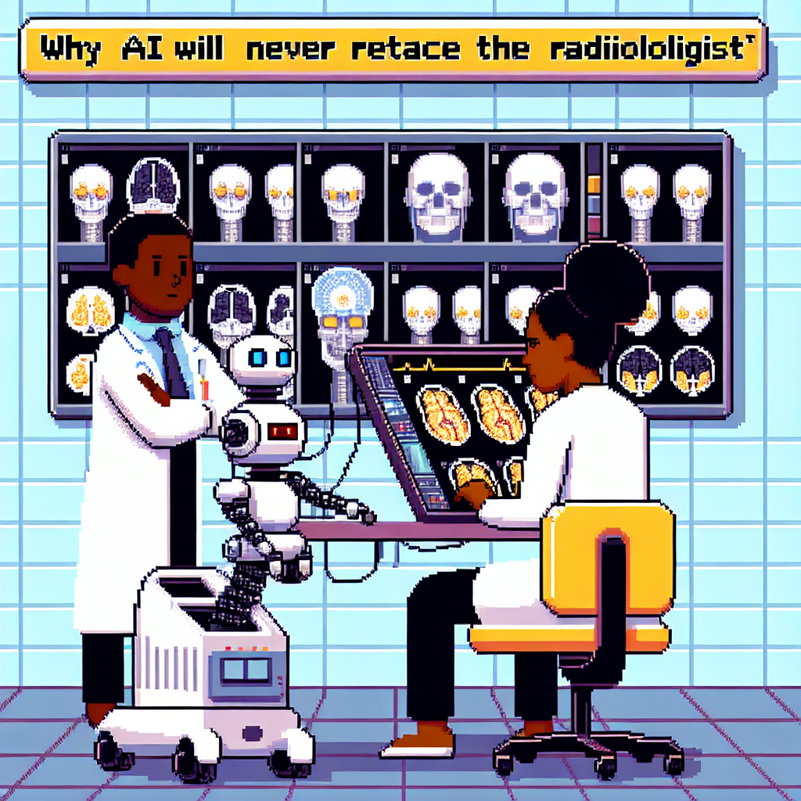

Why AI will never replace the radiologist
As a Python instructor focused on machine learning, Jose is well-versed in the advancements and challenges within the field. In his recent blog post titled "Why AI will never replace the radiologist," he delves into the topic of machine learning in radiology. In this insightful post, Jose discusses the limitations and potential drawbacks of relying solely on artificial intelligence for interpreting radiological images.
Jose's perspective sheds light on the importance of human expertise and intuition in the field of radiology, emphasizing that while AI can assist in the process, it cannot fully replace the skills and experience of a trained radiologist. By highlighting the nuances and complexities involved in this specialized area of healthcare, Jose offers a balanced view on the role of technology in the medical field.
Through his engaging writing style and depth of knowledge, Jose provides valuable insights for readers interested in the intersection of technology and healthcare. Stay tuned for more thought-provoking content from Jose on his website!